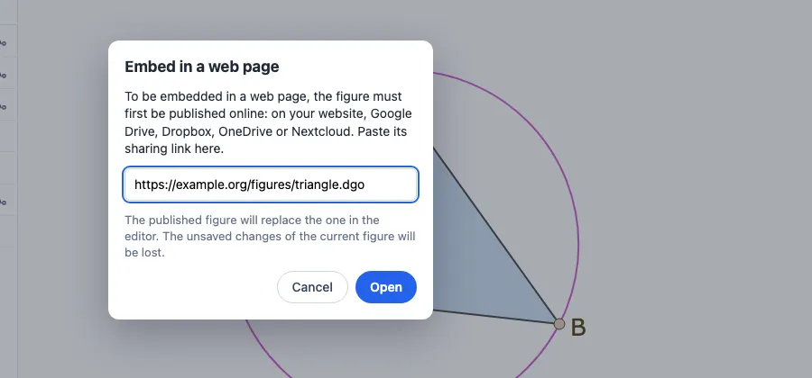
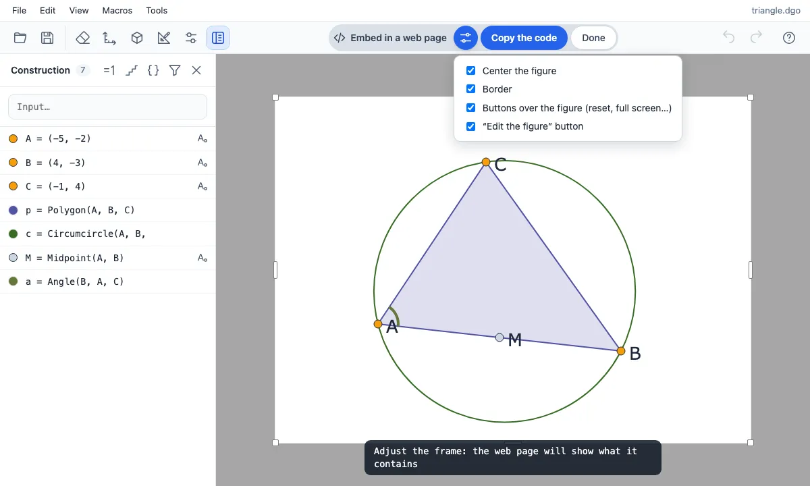

Embedding in a web page
A DocGeo figure can be shown in any web page — your website, a Moodle course, a blog — and manipulated there as in DocGeo. You only paste into the page’s HTML a code the editor prepares. The figure adapts to the page’s width, phones included.
How it works
The page doesn’t contain the figure: each time it is shown, it reads the figure where you published it online. Therefore:
- the figure must first be put online, as to share it by link;
- to update the page, you only replace the published file: every page embedding it shows the new version at once, without touching its code.
Step by step
-
Save the figure (Ctrl S), then put the
.dgofile online: on your website, Google Drive, Dropbox, OneDrive or Nextcloud. Copy its sharing link. -
Choose File › Embed in a web page…. If the
figure wasn’t opened from its link, DocGeo asks for it:
paste it and click Open. The published
figure then replaces the one in the editor, which ensures
the code will work.

- A frame appears over the figure: the page will show exactly what it contains. Its handles (corners and middles of the sides) resize it, its edges and its label move it. To frame, you can also zoom, move the view or turn a 3D figure; the figure can still be manipulated.
-
Set the options if needed, with the button left of
Copy the code.

- Click Copy the code, then paste this code into your page’s HTML.
- Done or Esc removes the frame.
The options
| Option | Effect |
|---|---|
| Center the figure |
wraps the code in <center>:
the figure is centered in the page.
|
| Border | a thin gray line around the figure. |
| Buttons over the figure | a small bar at the figure’s top right, shown when the mouse is over it: reset the figure, show it full screen. |
| “Edit the figure” button | adds to this bar a button opening the figure in the editor, in a new tab. Untick it, for instance, so that students don’t see the construction. |
All the options are ticked at first; your choices are kept until the editor is closed.
The code to paste
The copied code looks like this:
<center><iframe
src="https://…/index.html?fit=704,512,…&url=https://…/triangle.dgo"
style="width:704px;max-width:100%;aspect-ratio:704/512;border:1px solid #ccc"
allow="fullscreen" loading="lazy"></iframe></center>
To change the figure’s size in the page, only change
width, in pixels: the height follows, and the
figure keeps the frame’s proportions. On a narrower screen, such
as a phone’s, it shrinks by itself
(max-width:100%). Only change
aspect-ratio to give the figure’s space another
shape, the figure staying whole in it, centered. The numbers
after fit= describe what the figure shows, not its
size: don’t change them.
Paste the code where the page accepts HTML: in the
.html file itself, in a WordPress “Custom HTML”
block, or in the HTML (source code) mode of Moodle’s text
editor.
In the page
The figure is manipulated there as in DocGeo: points, sliders, checkboxes, buttons… Dragging an empty spot moves the view, or turns it in 3D. The wheel scrolls the page, as anywhere else; to zoom the figure, use Ctrl + wheel, or pinch on the touchpad.
Spread two fingers to zoom in, bring them together to zoom out. Drag both fingers together to move the view.
The buttons at the top right reset the figure (as the page opened it), show it full screen and, if the option is ticked, open it in the editor.
A figure with a spreadsheet view shows its sheet, without menus or buttons: its cells can be typed in, and the figure follows. Resetting gives the original cells back (for students).

Updating an embedded figure
Open the figure in the editor from its link (for instance with the page’s “Edit the figure” button), change it and save it, then replace the published file in the same place, keeping its link: on Google Drive, by uploading a new version of the file; on Dropbox, OneDrive or Nextcloud, by putting the new file under the same name, in the same folder. Every page embedding the figure then shows the new version, without changing its code.
To change the framing only, choose File › Embed in a web page… again and copy the new code: the published file doesn’t have to change.
If the figure has changed in the editor since it was opened from its link, DocGeo says so before showing the frame: as long as the published file isn’t replaced, the page shows the former version.
If the figure isn’t shown
- The link must be public: access “Anyone with the link” on Google Drive, a link without password on Nextcloud.
-
Some platforms remove the
<iframe>from pasted HTML, or only accept them for some sites or some users: check your platform’s settings. -
A code copied from a DocGeo installed on your computer
(
localhostaddress) only works on it: copy the code from the online editor. -
The full screen button only appears if the
<iframe>has theallow="fullscreen"attribute, which the copied code contains.